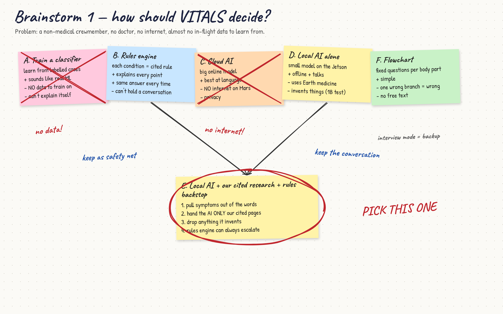
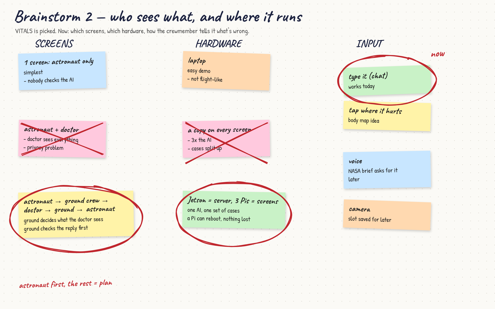
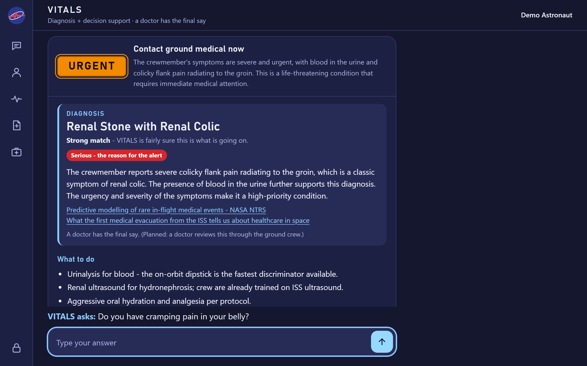
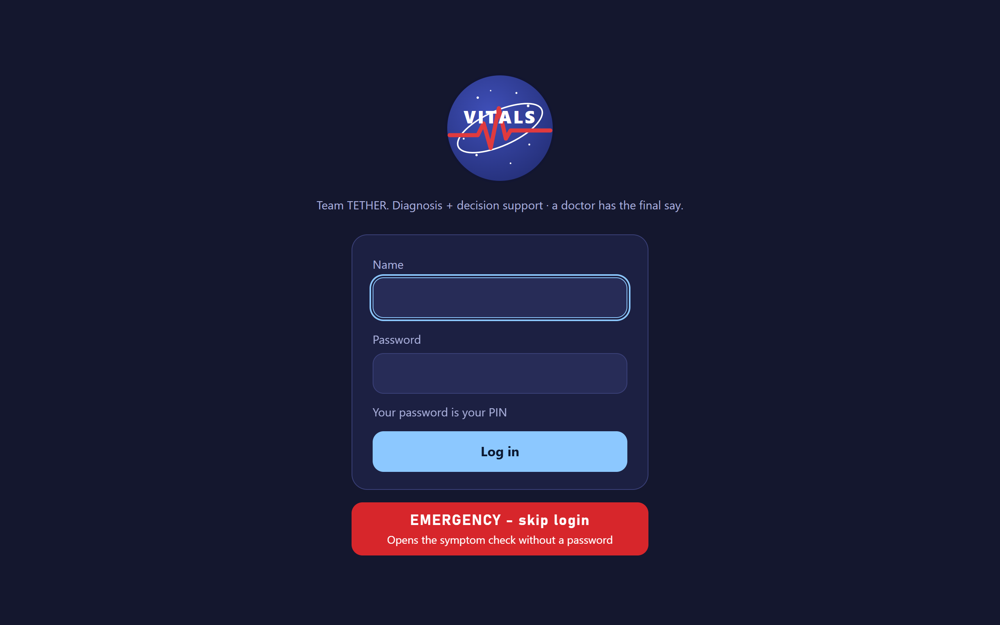
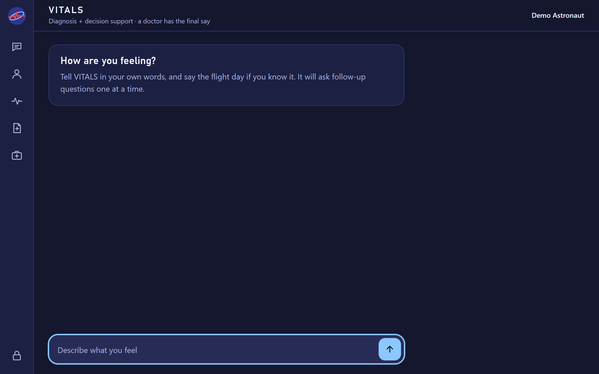
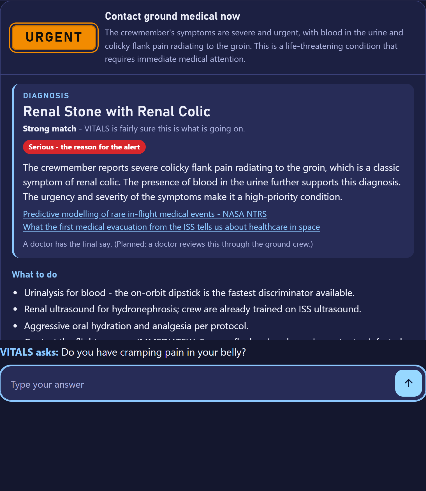
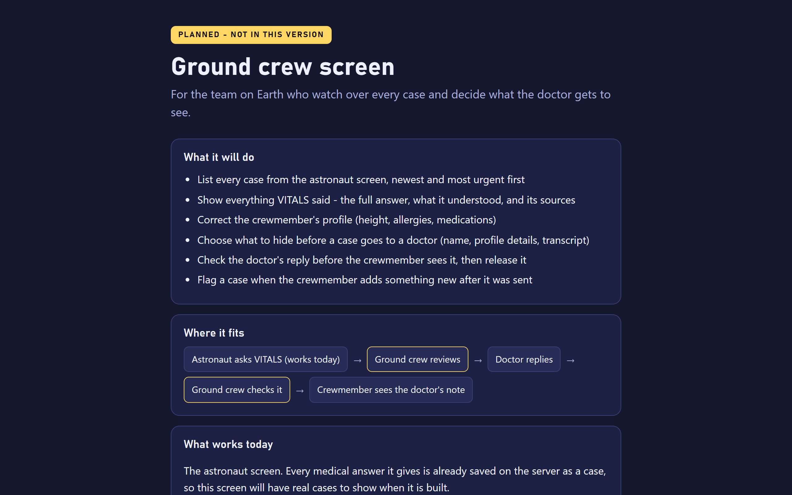
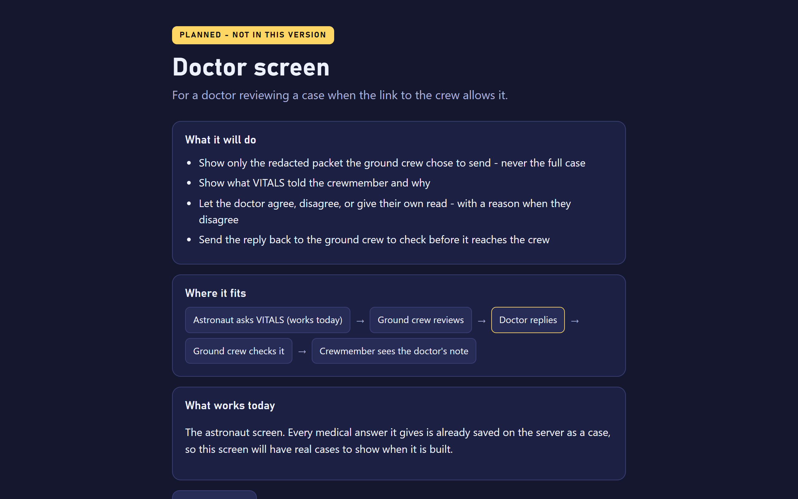

Long missions will usually fly with no physician on board. When someone gets sick or hurt, a non-medical crewmember has to answer three questions, offline and fast.
There is no flight data to train on
NASA's own risk models call in-flight medical data severely limited. For some serious conditions the count is zero. So VITALS grounds a local AI in cited NASA research instead of training one.
| Condition | What changes in space |
|---|---|
| Fluid shift | Stuffy nose on day 1 is not a cold |
| Motion sickness | Only early in flight; day 60 means something else |
| Decompression | Joint pain after a spacewalk outranks a strain |
| Kidney stone | Bone loss and dehydration raise the risk |
| Neck vein clot | Found on the ISS in crew with no symptoms |
35 conditions and 145 findings, every rule cited.
Works with no internet at all
C2Used by a non-medical crewmember under stress
C3Runs on a Jetson Orin Nano, 8 GB
C4Almost no in-flight medical data exists
C5Health data stays private
C6Small screen, gloves, bad lighting
Met: plain-word input, no invented conditions, a source for every answer, a Wrong? button, PIN login, emergency button. Close: escalates 18 of 19 must-escalate cases. Weakest: saying “nothing fits.”
We measured the models
| Model | Right condition | Missed alarms | Time |
|---|---|---|---|
| Llama 3.2, 3B | 73% | 0 | 4 s |
| Llama 3.1, 8B | 85% | 0 | 8 s |
| Llama 3.2, 1B | Invented a symptom | Backstop only | 80 s |
Tested on 33 prompts in September. The rules backstop cut missed alarms from 3 to 0.

Medical Diagnostic System with Machine Learning and Artificial Intelligence (from a non-medical person’s perspective)
South Texas ISD Science Academy, Mercedes, Texas. Team number
Joshua Collado, Joaquin and Cruz. Sponsor: Ms. Sylvia Odoms
How VITALS answers
We drew three options. Rules only explains itself but can’t hold a conversation. AI only talks well but invents conditions and citations. Grounded AI with a rules backstop, above, does both, so we chose it.


| What matters | Weight | Classifier | Rules | AI only | Grounded |
|---|---|---|---|---|---|
| Works offline | 5 | 5 | 5 | 5 | 5 |
| Never misses an alarm | 5 | 2 | 4 | 2 | 5 |
| Shows its sources | 4 | 1 | 5 | 2 | 5 |
| Understands real speech | 4 | 3 | 2 | 5 | 4 |
| Works with the data that exists | 4 | 1 | 4 | 4 | 4 |
| Runs on the Jetson | 3 | 5 | 5 | 3 | 3 |
| Testable and repeatable | 3 | 3 | 5 | 2 | 5 |
| Buildable this year | 2 | 2 | 4 | 5 | 3 |
| Total out of 150 | 83 | 127 | 104 | 132 |
Same method picked the model (Llama 3.2 3B) and the hardware (one Jetson server, three Raspberry Pi screens).

server.py, run_pipeline() runs the boxes in order:
classify(), then KeywordExtractor().extract(), then retrieve(), then ask(), which reasons, checks the reply and runs the rules backstop.
Cruz’s Figma is the plan; the working astronaut screen follows it. The command line runs the same function, so what we test is what the screen does.
It comes in waves
Commander Rivera, day 63 of a Mars transit. The ground is 18 minutes away.





caught by the real AI
| Time (UTC) | Subsystem | Element | Status |
|---|---|---|---|
| 22:33:50 | Knowledge base | kb/ | Pass |
| 22:33:50 | Sensors | sensors.py | Not connected |
| 22:33:50 | Scope | “hi” | Pass |
| 22:33:50 | Engine | 29 cases | Pass |
| 22:33:50 | Cases | owner check | Pass |
The one miss: elbow pain after a spacewalk, which should be decompression sickness. Fix in progress.
| Test | Passes when | Now |
|---|---|---|
| Missed alarms | zero, always | 1 |
| Unit tests | all pass | 262 |
| 60 real-speech prompts | 80% right | 73–85% |
| Network unplugged | still answers | Yes |
| 5 people try it | urgency read in 3 s | Nov |
| On the Jetson | 15 s an answer | Nov |
About 62% built
the bar marks 60%| November | Run it on the Jetson; teach it to say “nothing fits” |
| Dec to Feb | Ground crew and doctor screens, first sensor, user testing |
| March | CDR at 90%, with voice input |
| May 4–6 | FDR at Johnson Space Center |
VITALS is a student prototype for decision support. A doctor has the final say. Not a medical device.